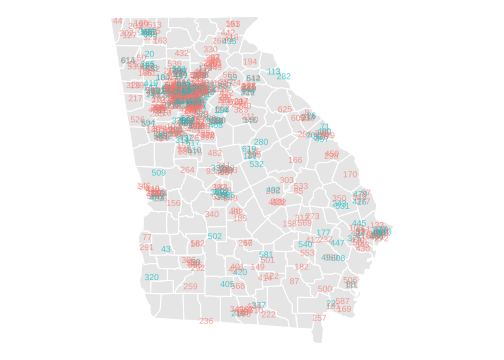
13 Comparing Two Groups
Examples and Introduction
Black vs. non-Black Voters in GA
$$ \newcommand{X}{} \newcommand{Y}{}
$$
\[ \small{ \begin{array}{r|rr|rr|r|rr|rrrrr} \text{call} & 1 & & 2 & & \dots & 625 & & & & & & \\ \text{question} & X_1 & Y_1 & X_2 & Y_2 & \dots & X_{625} & Y_{625} & \overline{X}_{625} & \overline{Y}_{625} &\frac{\sum_{i:X_i=0} Y_i}{\sum_{i:X_i=0} 1} & \frac{\sum_{i:X_i=1} Y_i}{\sum_{i:X_i=1} 1} & \text{difference} \\ \text{outcome} & \underset{\textcolor{gray}{x_{869369}}}{\textcolor[RGB]{248,118,109}{0}} & \underset{\textcolor{gray}{y_{869369}}}{\textcolor[RGB]{248,118,109}{1}} & \underset{\textcolor{gray}{x_{4428455}}}{\textcolor[RGB]{0,191,196}{1}} & \underset{\textcolor{gray}{y_{4428455}}}{\textcolor[RGB]{0,191,196}{1}} & \dots & \underset{\textcolor{gray}{x_{1268868}}}{\textcolor[RGB]{248,118,109}{0}} & \underset{\textcolor{gray}{y_{1268868}}}{\textcolor[RGB]{248,118,109}{1}} & 0.28 & 0.68 & \textcolor[RGB]{248,118,109}{0.68} & \textcolor[RGB]{0,191,196}{0.69} & 0.01 \\ \end{array} } \]
Recipients of Threatening Letters vs. Others in MI

- The green dots are people who received a letter pressuring them to vote. Figure 20.1.
- The red dots are people who didn’t.
Residents With vs. Without 4-Year Degrees in CA
| income | education | county | |
|---|---|---|---|
| 1 | $55k | 13 | orange |
| 2 | $25k | 13 | LA |
| 3 | $44k | 16 | san joaquin |
| 4 | $22k | 14 | orange |
| ⋮ | |||
| 2271 | $150k | 16 | stanislaus |
- In these examples, our sample was drawn with replacement from some population. Or we’re pretending it was.
- In this one, it’s the population of all California residents between 25 and 35 with at least an 8th grade education.
The locations shown on the map are made up. They’re not the actual locations of the people in the sample.
The survey includes some location information for some people, but as you can see in the table, not for everyone.

Population
| income | education | county | |
|---|---|---|---|
| 1 | $22k | 18 | unknown |
| 2 | $0k | 16 | solano |
| 3 | $98k | 16 | LA |
| ⋮ | |||
| 5677500 | $116k | 18 | unknown |
Sample
| income | education | county | |
|---|---|---|---|
| 1 | $55k | 13 | orange |
| 2 | $25k | 13 | LA |
| 3 | $44k | 16 | san joaquin |
| ⋮ | |||
| 2271 | $150k | 16 | stanislaus |
For illustration, I’ve made up a fake population that looks like a bigger version of the sample.
Our Estimator and Target


Estimation Target
\[ \begin{aligned} \mu(1) - \mu(0) \qfor \mu(x) &= \frac{1}{m_x}\sum_{j:x_j = x } y_j \\ \qqtext{ where } \quad m_x &= \sum_{j:x_j=x} 1 \end{aligned} \]
Estimator
\[ \begin{aligned} \hat\mu(1) - \hat\mu(0) \qfor \hat\mu(x) &= \frac{1}{N_x}\sum_{i:X_i=x} Y_i \\ \qqtext{ where } \quad N_x &= \sum_{i:X_i=x} 1. \end{aligned} \]
Is This Estimator Good?

- We want to know about our estimator’s …
- bias. That’s the location of the sampling distribution relative to the estimation target.
- standard deviation. Roughly speaking, that determines the width of our 95% confidence intervals.
Probability Review
Population Means and Variances as Expectations

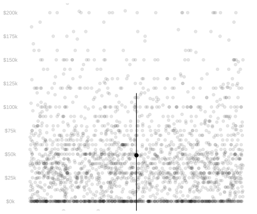
- If a random variable \(Y\) is equally likely to be any member of a population \(y_1 \ldots y_m\), …
- … then its expectation is the population mean \(\mu=\frac{1}{m}\sum_{j=1}^m y_j\).
- … and its variance is the population variance \(\sigma^2 = \frac{1}{m}\sum_{j=1}^m (y_j - \mu)^2\).
- Terminology. When each of our observations \(Y_i\) is like this, we’re sampling uniformly-at-random.
\[ \begin{aligned} \mathop{\mathrm{E}}[Y] &= \sum_{j=1}^m \underset{\text{response}}{y_j} \times \underset{\text{probability}}{\frac{1}{m}} = \frac{1}{m}\sum_{j=1}^m y_j = \mu \\ \mathop{\mathrm{E}}[(Y-\mathop{\mathrm{E}}[Y])^2] &= \sum_{j=1}^m \underset{\text{deviation}^2}{(y_j - \mu)^2} \times \underset{\text{probability}}{\frac{1}{m}} = \frac{1}{m}\sum_{j=1}^m (y_j - \mu)^2 = \sigma^2 \end{aligned} \]
Subpopulations and Conditioning

- Conditioning is, in effect, a way of thinking about sampling as a two-stage process.
- First, we choose the color of our dot, i.e., the value of \(X_i\), according to it frequency in the population.
- Then, we choose a specific one of those dots, i.e. \(J_i\), from those with that color—with equal probability.
- Because this is just a way of thinking, each person still gets chosen with probability \(1/m\).
\[ \begin{aligned} P(J_i=j) = \begin{cases} \frac{m_{green}}{m} \ \times \frac{1}{m_{green}} \ = \ \frac{1}{m} & \text{if the $j$th dot is green ($x_j=1$) } \\ \frac{m_{red}}{m} \ \times \frac{1}{m_{red}} \ = \ \frac{1}{m} & \text{otherwise} \end{cases} \end{aligned} \]
- The first stage is ‘a coin flip’ that decides whether we roll the ‘red die’ or the ‘green die’ in the second.
- The Conditional Probability of \(Y_i\) is the probability resulting from the second stage.
- \(P(Y_i=y \mid X_i=1)\) is the probability distribution of \(Y_i\) when we’re ‘rolling the green die’.
- \(P(Y_i=y \mid X_i=0)\) is the probability distribution of \(Y_i\) when we’re ‘rolling the red die’.
- The Conditional Expectation of \(Y_i\) is the ‘second stage expected value’ in the same sense.
- \(\mathop{\mathrm{E}}[Y_i \mid X_i=1]\) is the expected value of \(Y_i\) when we’re ‘rolling the green die’.
- It’s the mean value \(\mu(1)\) of \(y_j\) in the subpopulation drawn as little green dots.
- \(\mathop{\mathrm{E}}[Y_i \mid X_i=0]\) is the expected value of \(Y_i\) when we’re ‘rolling the red die’.
- It’s the mean value \(\mu(0)\) of \(y_j\) in the subpopulation drawn as little red dots.
- The Conditional Variance of \(Y_i\) is like this too. It’s the ‘second stage variance.’
- \(\mathop{\mathrm{\mathop{\mathrm{V}}}}[Y_i \mid X_i=1]\) is the variance of \(Y_i\) when we’re ‘rolling the green die’.
- It’s the variance \(\sigma^2(1)\) of \(y_j\) in the subpopulation drawn as little green dots.
- \(\mathop{\mathrm{\mathop{\mathrm{V}}}}[Y_i \mid X_i=0]\) is the variance of \(Y_i\) when we’re ‘rolling the red die’.
- It’s the variance \(\sigma^2(0)\) of \(y_j\) in the subpopulation drawn as little red dots.
About Conditional Expectations and Variances


- The conditional expectation function \(\mu(x)=E[Y \mid X=x]\).
- \(\mu\) is a function; evaluated at \(x\), it’s a number. It’s not random.
- It’s the mean of the subpopulation of people with \(X=x\).
- The conditional expectation \(\mu(X)=E[Y \mid X]\).
- \(\mu(X)\) is the mean of a random subpopulation of people.
- It’s the conditional expectation function evaluated at the random variable \(X\).
- The conditional variance function \(\sigma^2(x)=E[\{Y - \mu(x)\}^2 \mid X=x]\).
- \(\sigma^2\) is a function; evaluated at \(x\), it’s a number. It’s not random.
- It’s the variance of the subpopulation of people with \(X=x\).
- The conditional variance \(\sigma^2(X)=E[\{Y - \mu(X)\}^2 \mid X]\).
- \(\sigma^2(X)\) is the variance of a random subpopulation of people.
- It’s the conditional variance function evaluated at the random variable \(X\).
- This is like what happens with conditional expectations because it is one.
- It’s the conditional expectation of some random variable. What random variable?
- It’s the conditional expectation of the square of \(\textcolor[RGB]{0,0,255}{Y-\mu(X)}\), a conditionally centered version of \(Y\).
\[ \mathop{\mathrm{\mathop{\mathrm{V}}}}[Y \mid X] = \mathop{\mathrm{E}}[\textcolor[RGB]{0,0,255}{\{Y-\mu(X)\}}^2 \mid X] \qfor \mu(X) = \mathop{\mathrm{E}}[Y \mid X] \]
Working with Expectations
Linearity
\[ \begin{aligned} E ( a Y + b Z ) &= E (aY) + E (bZ) = aE(Y) + bE(Z) \\ &\text{ for random variables $Y, Z$ and numbers $a,b$ } \end{aligned} \]
Application. When we sample uniformly-at-random, the sample mean is unbiased.
\[ \begin{aligned} \mathop{\mathrm{E}}[\hat\mu] &= \mathop{\mathrm{E}}\qty[\frac1n\sum_{i=1}^n Y_i] \\ &= \frac1n\sum_{i=1}^n \mathop{\mathrm{E}}[Y_i] \\ &= \frac1n\sum_{i=1}^n \mu \\ &= \frac1n \times n \times \mu = \mu. \end{aligned} \]
Conditional Version. \[ \begin{aligned} E\{ a(X) Y + b(X) Z \mid X \} &= E\{a(X)Y \mid X\} + E\{ b(X)Z \mid X\} \\ &= a(X)E(Y \mid X) + b(X)E(Z \mid X) \\ & \text{ for random variables $X, Y, Z$ and functions $a,b$ } \end{aligned} \]
Expectations of Products Factor into Products of Expectations
\[ \color{gray} \mathop{\mathrm{E}}[\textcolor[RGB]{239,71,111}{Y}\textcolor[RGB]{17,138,178}{Z}] = \textcolor[RGB]{239,71,111}{\mathop{\mathrm{E}}[Y]}\textcolor[RGB]{17,138,178}{\mathop{\mathrm{E}}[Z]} \qqtext{when $\textcolor[RGB]{239,71,111}{Y}$ and $\textcolor[RGB]{17,138,178}{Z}$ are independent} \]
Application. When we sample with replacement, the sample mean’s variance is the population variance divided by \(n\).
\[ \color{gray} \begin{aligned} \mathop{\mathrm{\mathop{\mathrm{V}}}}[\hat\mu] &= \mathop{\mathrm{E}}\qty[ \qty{ \frac{1}{n}\sum_{i=1}^n Y_i - \mathop{\mathrm{E}}\qty[ \frac{1}{n}\sum_{i=1}^n Y_i ] }^2 ] \\ &= \mathop{\mathrm{E}}\qty[ \qty{ \frac{1}{n}\sum_{i=1}^n (Y_i - \mathop{\mathrm{E}}[Y_i]) }^2 ] \\ &= \mathop{\mathrm{E}}\qty[ \qty{ \frac{1}{n}\sum_{i=1}^n Z_i }^2 ] && \text{ for } \ Z_i = Y_i - \mathop{\mathrm{E}}[Y_i] \\ &= \mathop{\mathrm{E}}\qty[ \qty{ \textcolor[RGB]{239,71,111}{\frac{1}{n}\sum_{i=1}^n Z_i }} \times \qty{\textcolor[RGB]{17,138,178}{\frac{1}{n}\sum_{j=1}^n Z_j}} ] &&\text{ with } \mathop{\mathrm{E}}[ Z_i ] = \mathop{\mathrm{E}}[ Y_i ] - \mathop{\mathrm{E}}[Y_i] = \mu - \mu = 0 \\ &= \mathop{\mathrm{E}}\qty[ \frac{1}{n^2}\textcolor[RGB]{239,71,111}{\sum_{i=1}^n} \textcolor[RGB]{17,138,178}{\sum_{j=1}^n} \textcolor[RGB]{239,71,111}{Z_i} \textcolor[RGB]{17,138,178}{Z_j} ] &&\text{ and } \ \mathop{\mathrm{E}}[ Z_i^2] = \mathop{\mathrm{E}}[ \{ Y_i - \mathop{\mathrm{E}}[Y_i] \}^2 ] = \mathop{\mathrm{\mathop{\mathrm{V}}}}[Y_i] = \sigma^2 \\ &= \frac{1}{n^2} \textcolor[RGB]{239,71,111}{\sum_{i=1}^n} \textcolor[RGB]{17,138,178}{\sum_{j=1}^n} \mathop{\mathrm{E}}\qty[\textcolor[RGB]{239,71,111}{Z_i} \textcolor[RGB]{17,138,178}{Z_j} ] \\ &= \frac{1}{n^2} \textcolor[RGB]{239,71,111}{\sum_{i=1}^n} \textcolor[RGB]{17,138,178}{\sum_{j=1}^n} \begin{cases} \mathop{\mathrm{E}}[Z_i^2]=\sigma^2 & \text{if } j=i \\ \textcolor[RGB]{239,71,111}{\mathop{\mathrm{E}}[Z_i]}\textcolor[RGB]{17,138,178}{\mathop{\mathrm{E}}[Z_j]} = 0 \times 0 & \text{if } j\neq i \end{cases} \\ &= \frac{1}{n^2} \textcolor[RGB]{239,71,111}{\sum_{i=1}^n} \sigma^2 = \frac{1}{n^2} \times n \times \sigma^2 = \frac{\sigma^2}{n} \end{aligned} \]
The Law of Iterated Expectations


\[ \mathop{\mathrm{E}}[Y] = \mathop{\mathrm{E}}\qty[ \mathop{\mathrm{E}}( Y \mid X ) ] \quad \text{ for any random variables $X, Y$} \]
| \(p\) | \(X_i\) | \(\mathop{\mathrm{E}}[Y_i \mid X_i]\) |
|---|---|---|
| \(\frac{3}{6}\) | \(0\) | \(1\) |
| \(\frac{3}{6}\) | \(1\) | \(1.25\) |
What is \(\mathop{\mathrm{E}}[Y_i]\)?
| \(p\) | \(X_i\) | \(\mathop{\mathrm{E}}[Y_i \mid X_i]\) |
|---|---|---|
| \(0.58\) | 0 | \(31.22K\) |
| \(0.42\) | 1 | \(72.35K\) |
What is \(\mathop{\mathrm{E}}[Y_i]\)?
The Law of Iterated Iterated Expectations1
\[ \mathop{\mathrm{E}}\qty[Y \mid X] = \mathop{\mathrm{E}}\qty[ \ \mathop{\mathrm{E}}[Y \mid W, X] \ \mid X] \quad \text{ for any random variables $W, X, Y$} \]
- This says the law of iterated expectations works when we’re one stage into ‘3 stage sampling’.
- It’s the law of iterated expectations for the probability distribution we get when …
- We’ve flipped ‘color coin’ to choose \(X\).
- But we haven’t flipped the ‘shape coin’ to choose \(W\).
- It says that if we want to calculate the expectation of \(Y\) given a column \(X\), we can …
- First average over \(Y\) given a column \(X\) and a shape \(W\) to get a random variable taking on \(4\) values.
- Then average that over the shape \(W\) to get a random variable taking on only \(2\) values.
- Suppose we’re sampling with replacement from the tiny population above.
- Annotate the plot to show the function versions of \(\mathop{\mathrm{E}}[Y\mid W, X]\) and \(\mathop{\mathrm{E}}[Y\mid X]\).
- Make a table describing the random variable \(\mathop{\mathrm{E}}[Y\mid W, X]\)
- Marginalize to get a table describing \(\mathop{\mathrm{E}}[Y\mid X]\).
- Marginalize again to get the number \(\mathop{\mathrm{E}}[Y]\).
\(\mathop{\mathrm{E}}[Y \mid W, X]\)
| \(p\) | \(W\) | \(X\) | \(\mathop{\mathrm{E}}[Y \mid W, X]\) |
|---|---|---|---|
| \(\frac{3}{12}\) | ● | 0 | \(1\) |
| \(\frac{3}{12}\) | ▲ | 0 | \(1.75\) |
| \(\frac{3}{12}\) | ● | 1 | \(1.25\) |
| \(\frac{3}{12}\) | ▲ | 1 | \(2\) |
The function is the gray ● and ▲ in the plot.
\(\mathop{\mathrm{E}}[Y \mid X]\)
| \(p\) | \(X\) | \(\mathop{\mathrm{E}}[Y \mid X]\) |
|---|---|---|
| \(\frac{6}{12}\) | 0 | \(1.375\) |
| \(\frac{6}{12}\) | 1 | \(1.625\) |
The function is the gray ◆ in the plot.
\(\mathop{\mathrm{E}}[Y]\)
1.5
That’s midway
between the
two diamonds.
Irrelevance of independent conditioning variables

\[ \mathop{\mathrm{E}}[ \textcolor[RGB]{17,138,178}{Y} \mid \textcolor[RGB]{17,138,178}{X}, \textcolor[RGB]{239,71,111}{X'} ] = \textcolor[RGB]{17,138,178}{\mathop{\mathrm{E}}[ Y \mid X ]} \quad \text{ when $X'$ is independent of $X,Y$ } \]
Application. When we sample with replacement, the conditional expectation of \(Y_i\) given \(X_1 \ldots X_n\) is the conditional mean of \(Y_i\) given \(X_i\) alone.
\[ \mathop{\mathrm{E}}[Y_i \mid X_1 \ldots X_n] = \mathop{\mathrm{E}}[Y_i \mid X_i] = \mu(X_i) \qqtext{ when $(X_1, Y_1) \ldots (X_n, Y_n)$ are independent.} \]
The Indicator Trick


\[ 1_{=x}(X)\mu(X) = \begin{cases} 1 \times \mu(X) & \text{ when } X=x \\ 0 \times \mu(X) & \text{ when } X \neq x \end{cases} = \begin{cases} 1 \times \mu(x) & \text{ when } X=x \\ 0 \times \mu(x) & \text{ when } X \neq x \end{cases} = 1_{=x}(X)\mu(x) \]
Application.
\[ \mathop{\mathrm{E}}[1_{=x}(X)\mu(X)] = \mathop{\mathrm{E}}[ 1_{X=x} \mu(x) ] = \mu(x) \mathop{\mathrm{E}}[1_{=x}(X)] = \mu(x) \times P(X=x) \]
Unbiasedness
A Sample Mean is Unbiased
Claim. When we sample uniformly-at-random, the sample mean is an unbiased estimator of the population mean. \[ \mathop{\mathrm{E}}[\hat\mu] = \mu \]
We proved this earlier today using linearity of expectations. See Section 16.1.
A Subsample Mean is Unbiased
Claim. When we sample with replacement, a subsample mean is an unbiased estimator of the corresponding subpopulation mean. \[ \mathop{\mathrm{E}}[\hat\mu(1)] = \mu(1) \]
- Use the Law of Iterated Expectations, conditioning on \(X_1 \ldots X_n\).
- Then the linearity of conditional expectations to push the conditional expectation into the sum.
- Then irrelevance of independent conditioning variables to write things in terms of the random variable \(\mu(X_i)\)
- Then the indicator trick. What’s \(1_{=1}(X_i) \mu(X_i)\)? How is it related to \(\mu(1)\)?
\[ \hat\mu(1) = \frac{\sum_{i:X_i=1} Y_i}{\sum_{i:X_i=1} 1} = \frac{\sum_{i=1}^{n} 1_{=1}(X_i) Y_{i}}{\sum_{i=1}^{n} 1_{=1}(X_i)} \]
- It’s easy to make mistakes using linearity of expectations when we’re summing over a subsample.
- Can we or can we not ‘push’ or ‘pull’ and expectation through a sum …
- … when the terms in that sum depend on the value of a random variable?
- To make this a lot more obvious, we can rewrite these as sums over the whole sample.
- Instead of ‘excluding’ the terms where \(X_i=0\), we ‘make them zero’ by multiplying in the indicator \(1_{=1}(X_i)\).
- Then, of course we can distribute expectations through the sum.
- The question becomes whether we can ‘pull out’ the indicator.
- And we have a rule for that. We can do it if we’re conditioning on \(X_i\).
- When we write a subsample mean, we can do that …
- in the numerator, the sum of observations in the subsample.
- in the denominator, the number of those terms, which is a sum of ones over the subsample.
- We’re actually going to show something stronger.
- We’ll show that it’s unbiased conditional on the covariates \(X_1 \ldots X_n\).
- This implies unbiasedness in the usual sense via the law of iterated expectations.
\[ \begin{aligned} \mathop{\mathrm{E}}[\hat\mu(1) \mid X_1 \ldots X_n] &=\mathop{\mathrm{E}}\qty[\frac{\sum_{i=1}^{n} 1_{=1}(X_i) Y_{i}}{\sum_{i=1}^{n} 1_{=1}(X_i)} \mid X_1 \ldots X_n] \\ &\overset{\texttip{\small{\unicode{x2753}}}{via linearity. All the indicators (and their sum) are functions of $X_1\ldots X_n$.}}{=} \frac{\sum_{i=1}^{n} 1_{=1}(X_i) \mathop{\mathrm{E}}\qty{ Y_{i} \mid X_1 \ldots X_n}}{\sum_{i=1}^{n}1_{=1}(X_i)} \\ &\overset{\texttip{\small{\unicode{x2753}}}{via irrelevance of independent conditioning variables. $(X_i,Y_i)$ are independent of the other $X$s.}}{=} \frac{\sum_{i=1}^{n} 1_{=1}(X_i) \mathop{\mathrm{E}}\qty{ Y_{i} \mid X_i}}{\sum_{i=1}^{n}1_{=1}(X_i)} \\ &\overset{\texttip{\small{\unicode{x2753}}}{This is just a change of notation, as $\mu(X_i)=\mathop{\mathrm{E}}[Y_i \mid X_i]$, but it makes it easier to understand what happens next.}}{=} \frac{\sum_{i=1}^{n} 1_{=1}(X_i) \mu(X_i)}{\sum_{i=1}^{n}1_{=1}(X_i)} \\ &\overset{\texttip{\small{\unicode{x2753}}}{via the indicator trick.}}{=}\frac{\sum_{i=1}^{n}1_{=1}(X_i) \mu(1)}{\sum_{i=1}^{n}1_{=1}(X_{i})} \\ &\overset{\texttip{\small{\unicode{x2753}}}{via linearity}}{=} \mu(1) \ \frac{\sum_{i=1}^{n} 1_{=1}(X_i) }{\sum_{i=1}^{n}1_{=1}(X_{i})} = \mu(1) \end{aligned} \]
and therefore, using the law of iterated expectations,
\[ \mathop{\mathrm{E}}[\hat\mu(1)] = \mathop{\mathrm{E}}\qty[\mathop{\mathrm{E}}\qty[\hat\mu(1) \mid X_1 \ldots X_n]] = \mathop{\mathrm{E}}[\mu(1)] = \mu(1) \]
Differences in Subsample Means
Claim. A difference in subsample means is unbiased for the corresponding difference in subpopulation means.
\[ \mathop{\mathrm{E}}[\hat\mu(1) - \hat\mu(0)] = \mu(1) - \mu(0) \]
Why?
This follows from the linearity of expectations and unbiasedness of the subsample means.
\[ \mathop{\mathrm{E}}[\hat\mu(1) - \hat\mu(0)] = \mathop{\mathrm{E}}[\hat\mu(1)] - \mathop{\mathrm{E}}[\hat\mu(0)] = \mu(1) - \mu(0) \]
Is it conditionally unbiased?
It is. That follows from linearity of conditional expectations and conditional unbiasedness of the subsample means.
\[ \mathop{\mathrm{E}}[\hat\mu(1) - \hat\mu(0) \mid X_1 \ldots X_n] = \mathop{\mathrm{E}}[\hat\mu(1) \mid X_1 \ldots X_n] - \mathop{\mathrm{E}}[\hat\mu(0) \mid X_1 \ldots X_n] = \mu(1) - \mu(0) \]
Implications of Unbiasedness


- If we can estimate the width of its sampling distribution, we can get interval estimates with the coverage we want.
- The question that remains is whether those interval estimates are narrow enough to be useful.
Spread
The Question
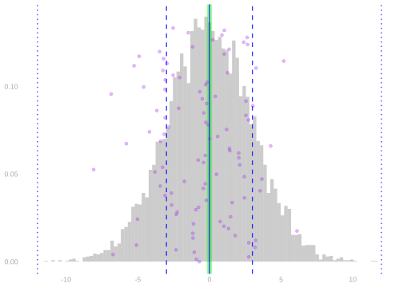
Spread Within and Between Groups

- You can think of there being two kinds of variation in a population.
- Within-group variation.
- That’s illustrated above by the ‘arms’ on our subpopulation means in the plot above.
- The arm length is, in fact, the subpopulation standard deviation.
- That’s the square root of the conditional variance function \(\sigma^2(x) = \mathop{\mathrm{\mathop{\mathrm{V}}}}[Y \mid X=x]\).
- Between-group variation.
- That’s about the difference between those subsample means.
- One reasonable summary is the standard deviation of the subpopulation means \(\mu(x) = \mathop{\mathrm{E}}[Y \mid X=x]\).
The Law of Total Variance


\[ \mathop{\mathrm{\mathop{\mathrm{V}}}}[Y] = \mathop{\mathrm{E}}\qty{\mathop{\mathrm{\mathop{\mathrm{V}}}}( Y \mid X ) } + \mathop{\mathrm{\mathop{\mathrm{V}}}}\qty{\mathop{\mathrm{E}}( Y \mid X ) } \]
- The Law of Total Variance breaks Variance into within-group and between-group terms.
- It’s like the Law of Iterated Expectations, but for Variance.
- It’s a useful way to decompose the variance of a random variable.
- Think about where most of the variance in \(Y\) is coming from in the two populations shown above.
We won’t prove this, but it’s in the slides if you’re interested. See Chapter 21.
Check Your Understanding

- Try to put the three terms into words.
- \(\mathop{\mathrm{\mathop{\mathrm{V}}}}[Y]\) is the …
- \(\mathop{\mathrm{E}}\qty{ \mathop{\mathrm{\mathop{\mathrm{V}}}}(Y \mid X) }\) is the …
- \(\mathop{\mathrm{\mathop{\mathrm{V}}}}\qty{\mathop{\mathrm{E}}( Y \mid X)}\) is the …
- Do this in two ways.
- Using ‘Random Variables Language’,
- e.g. ‘the expected value of the conditional variance of Y given X’
- Using ‘Population Language’
- e.g. ‘the variance of income (Y) within the random subpopulation with degree status X’
- Using ‘Random Variables Language’,
The Variance of the Sample Mean
Claim. When we sample w/ replacement, the variance of the sample mean
is the population variance divided by the number of people in the sample.
\[ \mathop{\mathrm{\mathop{\mathrm{V}}}}[\hat\mu] = \frac{\sigma^2}{n} \]
- We proved this earlier today using. See Section 16.2.
- We used, among other things, the property that expectations of products factor into products of expectations.
- Our proof for the subsample mean will be similar with more conditioning.
- We’ll use a conditional version of that we can derive using the ‘law of iterated iterated expectations’.
Conditional Expectations of Products Factor
When we sample with replacement, the conditional expectation of products factors into a product of conditional expectations.
\[ \mathop{\mathrm{E}}[Y_i \ Y_j \mid X_1 \ldots X_n] = \mathop{\mathrm{E}}[Y_i \mid X_i]\mathop{\mathrm{E}}[Y_j \mid X_j] = \mu(X_i)\mu(X_j) \qqtext{ when $(X_1, Y_1) \ldots (X_n, Y_n)$ are independent.} \]
This is a subtle application of two of our ‘laws’. \[ \begin{aligned} &\mathop{\mathrm{E}}[Y \mid X] = \mathop{\mathrm{E}}[ \mathop{\mathrm{E}}\qty[Y \mid W, X] \mid X] \quad \text{ for any random variables $W, X, Y$} && \text{Law of Iterated Iterated Expectations} \\ &\mathop{\mathrm{E}}[ \textcolor[RGB]{17,138,178}{Y} \mid \textcolor[RGB]{17,138,178}{X}, \textcolor[RGB]{239,71,111}{X'} ] = \textcolor[RGB]{17,138,178}{\mathop{\mathrm{E}}[ Y \mid X ]} \quad \text{ when $X'$ is independent of $X,Y$ } && \text{Irrelevance of Independent Conditioning Variables} \end{aligned} \]
\[ \color{gray} \begin{aligned} \mathop{\mathrm{E}}[ \textcolor[RGB]{239,71,111}{Y_i} \ \textcolor[RGB]{17,138,178}{Y_j} \mid X_1 \ldots X_n] &\overset{\texttip{\small{\unicode{x2753}}}{Here's use the law of iterated iterated expectations to 'break the second stage into a second and third'}}{=} \mathop{\mathrm{E}}[\mathop{\mathrm{E}}[\textcolor[RGB]{239,71,111}{Y_i} \ \textcolor[RGB]{17,138,178}{Y_j} \mid \textcolor[RGB]{239,71,111}{Y_i}, X_1 \ldots X_n] \mid X_1 \ldots X_n] \\ &\overset{\texttip{\small{\unicode{x2753}}}{Here we pull $Y_i$ out of the inner expectation (stage 3). That's justified by linearity of conditional expectations because it's a function of $\textcolor[RGB]{239,71,111}{Y_i}, X_1 \ldots X_n$, the stuff we chose in stages 1 and 2.}}{=} \mathop{\mathrm{E}}[ \textcolor[RGB]{239,71,111}{Y_i} \ \mathop{\mathrm{E}}[\textcolor[RGB]{17,138,178}{Y_j} \mid \textcolor[RGB]{239,71,111}{Y_i}, X_1 \ldots X_n] \mid X_1 \ldots X_n] \\ &\overset{\texttip{\small{\unicode{x2753}}}{Here we drop the irrelevant conditioning variables from the inner expectation. In the notation above, $Y=Y_j$, $X=X_j$, and $X'=(Y_i, X_1 \ldots X_n \text{ except } X_j)$, which describes other 'calls', is independent of $(X,Y)=(X_j, Y_j)$.}}{=} \mathop{\mathrm{E}}[\textcolor[RGB]{239,71,111}{Y_i} \ \mathop{\mathrm{E}}[\textcolor[RGB]{17,138,178}{Y_j} \mid X_j] \mid X_1 \ldots X_n] \\ &\overset{\texttip{\small{\unicode{x2753}}}{Here we pull $\textcolor[RGB]{17,138,178}{Y_j}$ out of the outer expectation (stage 2). That's justified by linearity of conditional expectations because it's a function of $X_1 \ldots X_n$, the stuff we chose in stage 1.}}{=} \textcolor[RGB]{17,138,178}{\mathop{\mathrm{E}}[Y_j \mid X_j]} \ \mathop{\mathrm{E}}[\textcolor[RGB]{239,71,111}{Y_i} \mid X_1 \ldots X_n] \\ &\overset{\texttip{\small{\unicode{x2753}}}{Here we drop the irrelevant conditioning variables from expectation involving $\textcolor[RGB]{239,71,111}{Y_i}$. In the notation above, $Y=Y_i$, $X=X_i$, and $X'=(Y_j, X_1 \ldots X_n \text{ except } X_i)$, which describes other 'calls', is independent of $(X,Y)=(X_i, Y_i)$.}}{=} \textcolor[RGB]{17,138,178}{\mathop{\mathrm{E}}[Y_j \mid X_j]} \ \textcolor[RGB]{239,71,111}{\mathop{\mathrm{E}}[Y_i \mid X_i]} \\ &\overset{\texttip{\small{\unicode{x2753}}}{This is the same thing in different notation.}}{=} \textcolor[RGB]{17,138,178}{\mu(X_j)} \ \textcolor[RGB]{239,71,111}{\mu(X_i)} \end{aligned} \]
- This proof is a bit stranger conceptually than it is as a matter of pushing symbols around.
- You don’t have to get it conceptually if you don’t want to.
- Sometimes it’s not worth it. But if you do want to, here’s what’s going on.
- We start out thinking about a ‘two stage’ sampling process.
- We flip our ‘color coin’ \(n\) times to choose \(X_1 \ldots X_n\).
- Those flips together are \(X\) in our iterated expectations formula.
- We roll n times to choose \(Y_1 \ldots Y_n\).
- For \(Y_i\), we roll the ‘red die’ if \(X_i=0\) and the ‘green die’ if \(X_i=1\).
- You can think of the product \(Y_i Y_j\) as \(Y\) in our iterated expectations formula.
- Then we use the ‘law of iterated iterated expectations’ to break that second stage into two.
- We roll once to choose \(Y_i\). That’s \(W\) in our iterated expectations formula.
- We roll \(n-1\) times to choose the rest of \(Y_1 \ldots Y_n\).
- After that, we simplify using linearity and the irrelevance of independent conditioning variables.
- It sound a little odd because our ‘3 stage sampling’ scheme depends on the pair \(Y_i, Y_j\) we’re thinking about.
- When we think about the pairs \(Y_1 Y_3\) and \(Y_2 Y_3\), we’re thinking about two different ways of drawing \(Y_3\).
- And we can’t really do both. It’s just one thing. We can’t draw it twice.
- That’s ok because we don’t really have to sample this way. It’s just a way of thinking about doing a calculation.
- This is a bit like how we can think of any pair \(Y_i,Y_j\) as distributed like \(Y_1,Y_2\) when
calculating about variance after sampling without replacement in this week’s homework. - Ultimately, it’s about linearity. When we’re calculating the expectation of a sum,
we only care about the marginal distribution of each term. - When that term involves only two observations, like we see in variance calculations,
we can think about the random mechanism that gives us each pair separately.
- This is a bit like how we can think of any pair \(Y_i,Y_j\) as distributed like \(Y_1,Y_2\) when
The Variance of the Subsample Mean
Claim. When we sample with replacement, the variance of a subsample mean is the
expected value of the subpopulation variance divided by the number of people in the subsample. \[
\mathop{\mathrm{\mathop{\mathrm{V}}}}[\hat\mu(1)] = \mathop{\mathrm{E}}\qty[ \frac{\sigma^2(1)}{N_1} ] \quad \text{ for } \quad N_1 = \sum_{i=1}^n 1_{=1}(X_i)
\]
- This is like what we saw in the unconditional case, but with a twist.
- The number of people in the subsample is random, so instead of \(1/n\), we have \(\mathop{\mathrm{E}}[ \frac{1}{N_1} ]\).
Step 1. Total Variance
- We’ll start by using the Law of Total Variance, conditioning on \(X_1 \ldots X_n\).
- And then we’ll have to calculate two terms.
- The expected value of the conditional variance
- The variance of the conditional expectation \[ \begin{aligned} \mathop{\mathrm{\mathop{\mathrm{V}}}}\qty[ \hat \mu(1) ] &= \underset{\color[RGB]{64,64,64}\text{within-groups term}}{\mathop{\mathrm{E}}\qty[ \mathop{\mathrm{\mathop{\mathrm{V}}}}\qty{ \hat \mu(1) \mid X_1 \ldots X_n }] } + \underset{\color[RGB]{64,64,64}\text{between-groups term}}{\mathop{\mathrm{\mathop{\mathrm{V}}}}\qty[ \mathop{\mathrm{E}}\qty{\hat \mu(1) \mid X_1 \ldots X_n} ] } \\ \end{aligned} \]
- This is one place it helps to know our estimator is conditionally unbiased.
- That conditional expectation is the constant \(\mu(1)\).2
- So the ‘between-groups’ variance term is zero.
Step 2. Centering and Squaring
\[ \begin{aligned} \mathop{\mathrm{\mathop{\mathrm{V}}}}\qty[ \hat \mu(1) \mid X_1 \ldots X_n ] &\overset{\texttip{\small{\unicode{x2753}}}{Definitionally.}}{=} \mathop{\mathrm{E}}\qty[ \qty{\hat \mu(1) - \mu(1) }^2 \mid X_1 \ldots X_n ] \\ &\overset{\texttip{\small{\unicode{x2753}}}{Also definitionally.}}{=} \mathop{\mathrm{E}}\qty[ \qty{\frac{\sum_{i=1}^n 1_{=1}(X_i)Y_{i}}{\sum_{i=1}^n 1_{=1}(X_i)} - \mu(1)}^2 \mid X_1 \ldots X_n ] \\ &\overset{\texttip{\small{\unicode{x2753}}}{Multiplying $\mu(1)$ by $N_1/N_1$ to get a common denominator}}{=} \mathop{\mathrm{E}}\qty[ \qty{ \frac{\sum_{i=1}^n 1_{=1}(X_i){\textcolor[RGB]{0,0,255}{\qty{Y_{i} - \mu(1)}}}}{\sum_{i=1}^n 1_{=1}(X_i)}}^2 \mid X_1 \ldots X_n ] \\ &\overset{\texttip{\small{\unicode{x2753}}}{The indicator trick tells us the factors we've highlighted in \textcolor[RGB]{0,0,255}{blue} are the same.}}{=} \mathop{\mathrm{E}}\qty[ \qty{ \frac{\sum_{i=1}^n 1_{=1}(X_i)\textcolor[RGB]{0,0,255}{Z_i}}{\sum_{i=1}^n 1_{=1}(X_i)}}^2 \mid X_1 \ldots X_n ] \qfor \textcolor[RGB]{0,0,255}{Z_i = Y_{i} - \mu(X_i)} \\ &\overset{\texttip{\small{\unicode{x2753}}}{Expanding the square.}}{=} \mathop{\mathrm{E}}\qty[ \frac{\textcolor[RGB]{239,71,111}{\sum_{i=1}^n}\textcolor[RGB]{17,138,178}{\sum_{j=1}^n} \textcolor[RGB]{239,71,111}{1_{=1}(X_i)Z_i} \ \textcolor[RGB]{17,138,178}{1_{=1}(X_j)Z_j}}{\qty{\sum_{i=1}^n 1_{=1}(X_i) }^2} \mid X_1 \ldots X_n ] \\ &\overset{\texttip{\small{\unicode{x2753}}}{Distributing the expectation. We can pull out the denominator and the indicator in each term because they're functions of $X_1 \ldots X_n$.}}{=} \frac{\textcolor[RGB]{239,71,111}{\sum_{i=1}^n}\textcolor[RGB]{17,138,178}{\sum_{j=1}^n} \textcolor[RGB]{239,71,111}{1_{=1}(X_i)} \textcolor[RGB]{17,138,178}{1_{=1}(X_j)}\mathop{\mathrm{E}}\qty[\textcolor[RGB]{239,71,111}{Z_i} \textcolor[RGB]{17,138,178}{Z_j} \mid X_1 \ldots X_n] }{\qty{\sum_{i=1}^n 1_{=1}(X_i) }^2} \end{aligned} \]
This random variable \(Z_i\) is like the one we have in the unconditional case, but conditionally.
\[ \begin{aligned} \mathop{\mathrm{E}}[ Z_i \mid X_i ] &= \mathop{\mathrm{E}}[ Y_i - \mu(X_i) \mid X_i ] = \mathop{\mathrm{E}}[ Y_i \mid X_i ] - \mu(X_i) = \mu(X_i) - \mu(X_i) && \overset{\texttip{\small{\unicode{x2753}}}{It has conditional expectation zero. }}{\ } \\ \mathop{\mathrm{E}}[ Z_i^2 \mid X_i] &= \mathop{\mathrm{E}}[ \{ Y_i - \mathop{\mathrm{E}}[Y_i \mid X_i] \}^2 \mid X_i] = \mathop{\mathrm{\mathop{\mathrm{V}}}}[Y_i \mid X_i] && \overset{\texttip{\small{\unicode{x2753}}}{The conditional expectation of its square is the conditional variance of $Y_i$ }}{\ } \end{aligned} \]
Step 3. Taking Expectations Term-by-Term
Squared Terms (\(i=j\))
\[ \begin{aligned} \mathop{\mathrm{E}}\qty[\textcolor[RGB]{239,71,111}{Z_i}\textcolor[RGB]{17,138,178}{Z_j} \mid X_1 \ldots X_n] &\overset{\texttip{\small{\unicode{x2753}}}{Because $i=j$}}{=} \mathop{\mathrm{E}}\qty[ Z_i^2 \mid X_1 \ldots X_n] \\ &\overset{\texttip{\small{\unicode{x2753}}}{Because $X' = (X_1 \ldots X_n \text{except} X_i)$ is independent of $X_i$ and $Y_i$.}}{=} \mathop{\mathrm{E}}\qty[ Z_i^2 \mid X_i] \\ &\overset{\texttip{\small{\unicode{x2753}}}{Definitionally}}{=}\mathop{\mathrm{\mathop{\mathrm{V}}}}[Y_i \mid X_i] = \sigma^2(X_i) \end{aligned} \]
Cross-Terms (\(i\neq j\))
\[ \begin{aligned} \mathop{\mathrm{E}}\qty[\textcolor[RGB]{239,71,111}{Z_i} \textcolor[RGB]{17,138,178}{Z_j} \mid X_1 \ldots X_n] &\overset{\texttip{\small{\unicode{x2753}}}{This is the factorization identity we proved a few slides back.}}{=}\textcolor[RGB]{239,71,111}{\mathop{\mathrm{E}}\qty[Z_i \mid X_i]} \textcolor[RGB]{17,138,178}{\mathop{\mathrm{E}}\qty[Z_j \mid X_j]} \\ &\overset{\texttip{\small{\unicode{x2753}}}{Definitionally}}{=} 0 \times 0 \end{aligned} \]
Step 4. Putting the Pieces Together
\[ \begin{aligned} \mathop{\mathrm{\mathop{\mathrm{V}}}}\qty[ \hat \mu(1) \mid X_1 \ldots X_n ] &\overset{\texttip{\small{\unicode{x2753}}}{Step 1}}{=} \underset{\color[RGB]{64,64,64}\text{within-groups term}}{\mathop{\mathrm{E}}\qty[ \mathop{\mathrm{\mathop{\mathrm{V}}}}\qty{ \hat \mu(1) \mid X_1 \ldots X_n }] } + \underset{\color[RGB]{64,64,64}\text{between-groups term}}{ 0 } \\ &\overset{\texttip{\small{\unicode{x2753}}}{Step 2}}{=} \mathop{\mathrm{E}}\qty[\frac{\textcolor[RGB]{239,71,111}{\sum_{i=1}^n}\textcolor[RGB]{17,138,178}{\sum_{j=1}^n} \textcolor[RGB]{239,71,111}{1_{=1}(X_i)} \textcolor[RGB]{17,138,178}{1_{=1}(X_j)}\mathop{\mathrm{E}}\qty[\textcolor[RGB]{239,71,111}{Z_i} \textcolor[RGB]{17,138,178}{Z_j} \mid X_1 \ldots X_n] }{\qty{\sum_{i=1}^n 1_{=1}(X_i) }^2}] + 0 \\ &\overset{\texttip{\small{\unicode{x2753}}}{Step 3}}{=} \mathop{\mathrm{E}}\qty[\frac{\textcolor[RGB]{239,71,111}{\sum_{i=1}^n 1_{=1}(X_i)} \ \sigma^2(X_i) }{\qty{\sum_{i=1}^n 1_{=1}(X_i) }^2}] \\ &\overset{\texttip{\small{\unicode{x2753}}}{The indicator trick again.}}{=} \mathop{\mathrm{E}}\qty[\frac{\textcolor[RGB]{239,71,111}{\sum_{i=1}^n 1_{=1}(X_i)} \ \sigma^2(1) }{\qty{\sum_{i=1}^n 1_{=1}(X_i) }^2}] \\ &\overset{\texttip{\small{\unicode{x2753}}}{Cancelling a common factor of $N_1$ in the numerator and denominator.}}{=} \mathop{\mathrm{E}}\qty[\frac{\sigma^2(1)}{\sum_{i=1}^n 1_{=1}(X_i) } ] \end{aligned} \]
The Variance of Differences in Means
Claim. The variance of the difference in subsample means is the sum of the variances of the subsample means. \[ \mathop{\mathrm{\mathop{\mathrm{V}}}}[\hat\mu(1) - \hat\mu(0)] = \mathop{\mathrm{E}}\qty[ \frac{\sigma^2(1)}{N_1} + \frac{\sigma^2(0)}{N_0}] \quad \text{ for } \quad N_x = \sum_{i=1}^n 1_{=x}(X_i) \]
This’ll be a Homework Exercise.
Estimating the Variance


\[ \mathop{\mathrm{\mathop{\mathrm{V}}}}[\hat\mu(1) - \hat\mu(0)] = \mathop{\mathrm{E}}\qty[ \frac{\sigma^2(1)}{N_1} + \frac{\sigma^2(0)}{N_0}] \quad \text{ for } \quad N_x = \sum_{i=1}^n 1_{=x}(X_i) \]
- This formula includes a few things we don’t know.
- We don’t know the subpopulation standard deviations \(\sigma(0)\) or \(\sigma(1)\).
- Those are drawn in as ‘arms’ on the subpopulation means in the plot on the left.
- That’s a fake-data plot. It’s an illustration of data we don’t really get to see.
- We also don’t know the expected values of \(1/N_1\) or \(1/N_0\).
- We’d need to know some things about the population to calculate those, too.
- In particular, we’d need to know the frequency that \(x_j=1\) in our population.
- What we can do is use our sample to estimate all of those tings.
- We can use the subsample standard deviations \(\hat\sigma(0)\) or \(\hat\sigma(1)\).
- Those are drawn in as ‘arms’ on the subsample means in the plot on the right.
- That’s a plot of the data we have. Our sample. And they’re about the same length.
- We can use the \(1/N_1\) and \(1/N_0\) themselves to estimate their expected values.
- And we can plug those into our variance formula to get an estimate of this variance.
\[ \widehat{\mathop{\mathrm{\mathop{\mathrm{V}}}}}[\hat\mu(1) - \hat\mu(0)] = \frac{\hat{\sigma}^2(1)}{N_1} + \frac{\hat{\sigma}^2(0)}{N_0} \qfor \hat \sigma^2(x) = \frac{1}{N_x} \sum_{i:X_i=x} (Y_i - \hat \mu(x))^2 \]
Case Study
The NSW Experiment
Code
nsw.data = read.csv('../data/nsw.csv')
nsw = nsw.data |>
filter(dataset=='nsw')
X = as.numeric(nsw$treated)
Y = as.numeric(nsw$income78)
n = length(Y)library(purrr)
difference = mean(Y[X==1]) - mean(Y[X==0])
difference.bootstrap.samples = map_vec(1:10000, function(.) {
I = sample(1:n, n, replace=TRUE)
Xstar = X[I]
Ystar = Y[I]
mean(Ystar[Xstar==1]) - mean(Ystar[Xstar==0])
})w95.boot = width(difference.bootstrap.samples, alpha=.05)
nsw.interval = difference + c(-1,1)*w95.boot/2The National Supported Work Demonstration

| \(x\) | \(N_x\) | \(\hat \mu(x)\) | \(\hat \sigma(x)\) |
|---|---|---|---|
| 0 | 260 | 4600 | 5500 |
| 1 | 185 | 6300 | 7900 |
- The National Supported Work Demonstration was an experimental program in the 1970s that provided job training and other services.
- Here ‘experimental’ doesn’t just mean untested. It was run as a big experiment.
- From a population of eligible people, they drew a sample of size 445 to participate.
- To help estimate the impact of the program, participants were randomized into two groups.
- The ‘treated’ group received the training and services.
- The ‘control’ group did not.
- A year or two after the program ended, they compared the incomes of the two groups.
- And the difference within the sample was about $1800 per year. In 1978 dollars.
- That’s pretty good. A dollar in 1978 was worth about what $4.80 is today.
- So adjusting for inflation, that’s an in-sample difference of about $8600. Huge impact.
- But there’s problem. It’s not clear that this describes a real population-level difference.
- The sample was relatively small. And, as a result, their interval estimate was pretty wide.
\[ \begin{aligned} \mu(1)-\mu(0) &\in 1800 \pm 1300 \approx [500, \ 3100] &&\qqtext{is a 95\% confidence interval in 1978 dollars} \\ &\in 8600 \pm 6300 \approx [2300, \ 14900] &&\qqtext{adjusted for inflation} \end{aligned} \]
- This was an expensive program to run.
- If the population difference were at the low end of the interval, at 500 1978 dollars, it wouldn’t be cost-effective.
- If the population difference were at the high end of the interval, at 3100 1978 dollars, it would be.
- To figure out if it’s worth running, we need a more conclusive result.
Activities
| \(x\) | \(N_x\) | \(\hat \mu(x)\) | \(\hat \sigma(x)\) |
|---|---|---|---|
| 0 | 260 | 4600 | 5500 |
| 1 | 185 | 6300 | 7900 |
- Use the information in this table to calculate a 95% interval based on normal approximation.
- Compare it to the interval we got using the bootstrap sampling distribution for calibration.
- Suppose we want to know the population difference to within $500 (1978 dollars).
- How can we resize our experiment to make that happen?
- We could restart the experiment, running it exactly as before, to get a larger sample like the one we have.
- In particular, one with the same proportion of participants assigned to treated and control units.
- What sample size would we need to be able to get a 95% confidence interval this accurate?
- It’d be cheaper to increase the size of our control group without actually treating anyone.
- Suppose you can analyze the resulting ‘diluted’ version of our experiment exactly like the original.
- Same variance formula, same \(N_1\), but larger \(N_0\).
- How big do we need to make \(N_0\) to get the desired level of precision?
- Is it even possible without increasing \(N_1\)? How precise can we get keeping \(N_1\) as-is?
- You can use a ‘two stage sampling’ argument to think of the ‘diluted’ version of our experiment …
- … as being like the one we ran orginally, but with a different coin to assign treatment.
- In essence, getting assigned treatment in the diluated version requires you to flip heads twice.
- Once to be in the first part of this larger sample—our original sample.
- Once to be in the part of that sample assigned to treatment.
- We can boil those two flips down to one flip of an appropriately weighted coin.
Warm-Up.
Our interval based on normal approximation should be \(\hat\theta \pm 1.96 \times \hat\sigma_{\hat\theta}\) where \(\hat\theta=\hat\mu(1) - \hat\mu(0)\) is our point estimate and \(\hat\sigma_{\hat\theta}\) is an estimate of its standard deviation. That’s roughly \(\hat\theta \pm 2 \times 670\). Pretty similar to our bootstrap interval. Using the formula from Section 18.13, we calculate it like this.
\[ \begin{aligned} \widehat{\mathop{\mathrm{\mathop{\mathrm{V}}}}}[\hat\mu(1) - \hat\mu(0)] &= \frac{\hat\sigma^2(1)}{N_1} + \frac{\hat\sigma^2(0)}{N_0} \\ &\approx \frac{61.90M}{185} + \frac{30.07M}{260} \\ &\approx 450.24K \approx \hat\sigma_{\hat\theta}^2 \qfor \hat\sigma_{\hat\theta} \approx 670 \end{aligned} \]
Resizing Part 1.
If we’re resizing our experiment but running as before, we can think of the new subsample sizes as being roughly proportional to the old ones. That is, if our new sample size is \(\alpha n\), then our subsample sizes will be \(\alpha N_1\) and \(\alpha N_0\). Plugging these new sample sizes in our variance formula, we get a simple formula for our our estimator’s standard deviation in this new experiment relative to the old one. It’s just \(\sigma_{\hat\theta}/\sqrt{\alpha}\) where \(\sigma_{\hat\theta}\) is the standard deviation of our estimator in our original experiment.
\[ \begin{aligned} \mathop{\mathrm{\mathop{\mathrm{V}}}}[\hat\mu(1) - \hat\mu(0)] &= \frac{\sigma^2(1)}{\alpha N_1} + \frac{\sigma^2(0)}{\alpha N_0} = \frac{1}{\alpha} \sigma_{\hat\theta}^2 = \qty(\frac{\sigma_{\hat\theta}}{\sqrt{\alpha}})^2 \end{aligned} \]
That is, it’s \(1/\sqrt{\alpha}\) times the quantity we just estimated to be \(\hat\sigma_{\hat\theta} \approx 670\), so it’s sensible to estimate it by \(\hat\sigma_{\hat\theta}/\sqrt{\alpha}\). We want our new interval \(\hat\theta \pm 1.96\hat\sigma_{\hat\theta}/\sqrt{\alpha}\) to be \(\hat\theta \pm 500\). The old one, \(\hat\theta \pm 1.96\hat\sigma_{\hat\theta} \approx \hat\theta \pm 1320\), was about 3 times wider than this, so we want \(\sqrt{\alpha} \approx 3\) and therefore \(\alpha \approx 9\). Since we’ve already got a sample of size \(n\), we can run a ‘second wave’ of size \((\alpha-1)n \approx 8n\) to get a big enough sample.
That’s a back-of-the-envelope calculation. If we want to be a bit more precise, we can actually solve for \(\alpha\) that equates these two interval widths. \[ \begin{aligned} \frac{1.96\hat\sigma_{\hat\theta}}{\sqrt{\alpha}} = 500 \qfor \alpha = \qty(\frac{1.96\hat\sigma_{\hat\theta}}{500})^2 \approx 6.92 \end{aligned} \]
That’s a bit better than 9. It pays to be precise sometimes.
Resizing Part 2. If it’s free to include more participants in our control group, we may as we’ll make \(N_0\) arbitrarily large. If we did, we’d have this variance.
\[ \begin{aligned} \widehat{\mathop{\mathrm{\mathop{\mathrm{V}}}}}[\hat\mu(1) - \hat\mu(0)] &= \frac{\hat\sigma^2(1)}{N_1} + \frac{\hat\sigma^2(0)}{\infty} = \qty(\frac{\hat\sigma(1)}{\sqrt{N_1}})^2 \approx 580^2 \end{aligned} \]
The resulting interval would be \(\pm 1.96 \times 580 \approx \pm 1130\). Roughly twice as wide as we want. So we’re not getting the precision we want for free. Thinking back to Part 1, that means we’d want \(N_1\) to be roughly \(\alpha = 4\) times larger. And that’d mean treating roughly \((\alpha-1) = 3\) more people. That’s a lot cheaper than treating \(8\) (or really \(5.92\)) times as many people, as we would if we ran our second wave as a scaled-up version of the first.
Appendix: Additional Figures
Appendix: Proving the Law of Total Variance
Starting Point: Interpreting Variance as Excess
\[ \small{ \begin{aligned} \mathop{\mathrm{\mathop{\mathrm{V}}}}(Y) &= \mathop{\mathrm{E}}\qty[ \qty{ Y - \mathop{\mathrm{E}}(Y) }^2 ] && \text{ the \emph{spread} idea: the mean square of a \emph{centered version} of $Y$ } \\ &= \mathop{\mathrm{E}}\qty(Y^2) - \qty{\mathop{\mathrm{E}}\qty(Y)}^2 && \text{ the \emph{excess} idea: the average amount $Y^2$ \emph{exceeds} the square of its mean}. \end{aligned} } \]
Let’s think, in terms of the plot, about why there is excess in the square.
- Suppose \(Y\) takes on three values — the dots —with equal probability.
- Its expectation is the average height of the black dots.
- And its expectation, squared, is the square of this.
- Its square \(Y^2\) takes on the the square of those values—the squares — with equal probability.
- Its expectation is the average height of the squares.
- Why is the second one bigger?
- Because squaring increases big draws of Y more than it decreases small ones.
- Visually, the line from \(Y\) to \(Y^2\) is longer when \(Y\) is bigger than when it’s smaller.
- We’ll mostly think about variance in terms of spread, but the ‘excess’ formula comes up in calculations.
Equivalence Proof
Claim. The spread and excess formulas for variance are equivalent. \[ \mathop{\mathrm{E}}\qty[ \qty{ Y - \mathop{\mathrm{E}}(Y) }^2 ] =\mathop{\mathrm{E}}[ Y^2] - \qty{\mathop{\mathrm{E}}(Y)}^2 \]
\[ \small{ \begin{aligned} \mathop{\mathrm{E}}\qty[ \qty{ Y - \mathop{\mathrm{E}}(Y) }^2 ] &= \mathop{\mathrm{E}}\qty[ Y^2 - 2 Y \mathop{\mathrm{E}}(Y) + \qty{\mathop{\mathrm{E}}(Y)}^2 ] && \text{ FOIL } \\ &= \mathop{\mathrm{E}}[ Y^2] - \mathop{\mathrm{E}}\qty[2 Y \mathop{\mathrm{E}}(Y)] + \mathop{\mathrm{E}}\qty[\qty{\mathop{\mathrm{E}}(Y)}^2] && \text{Distributing expectations (linearity)} \\ &= \mathop{\mathrm{E}}[ Y^2] - 2\mathop{\mathrm{E}}(Y)\mathop{\mathrm{E}}\qty[Y] + \qty{\mathop{\mathrm{E}}(Y)}^2\mathop{\mathrm{E}}[1] && \text{Pulling constants out of expectations (linearity)} \\ &= \mathop{\mathrm{E}}[ Y^2] - 2\qty{\mathop{\mathrm{E}}(Y)}^2 + \qty{\mathop{\mathrm{E}}(Y)}^2] && \text{Recognizing a product of something with itself as a square} \\ &= \mathop{\mathrm{E}}[ Y^2] - \cancel{2}\qty{\mathop{\mathrm{E}}(Y)}^2 + \cancel{\qty{\mathop{\mathrm{E}}(Y)}^2}] && \text{Subtracting} \end{aligned} } \]
Conditional Variance as Excess
\[ \small{ \begin{aligned} \mathop{\mathrm{\mathop{\mathrm{V}}}}(Y \mid X) &= \mathop{\mathrm{E}}\qty[ \qty{ Y - \mathop{\mathrm{E}}(Y\mid X)}^2 \mid X ] && \text{ the \emph{spread} idea: the mean square of a conditionally centered version of $Y$ } \\ &= \mathop{\mathrm{E}}\qty(Y^2 \mid X) - \qty{\mathop{\mathrm{E}}\qty(Y \mid X)}^2 && \text{ the \emph{excess} idea: the average amount $Y^2$ exceeds the square of its cond. mean} \end{aligned} } \]
- We can think of the Conditional Variance as excess, too.
- It’s the same as the unconditional case, but within subpopulations.
Proof
Claim. \[ \mathop{\mathrm{\mathop{\mathrm{V}}}}[Y] = \textcolor{blue}{\mathop{\mathrm{E}}\qty[\mathop{\mathrm{\mathop{\mathrm{V}}}}(Y \mid X)]} + \textcolor{green}{\mathop{\mathrm{\mathop{\mathrm{V}}}}\qty[\mathop{\mathrm{E}}(Y \mid X)]} \]
- Rewrite the variances, conditional and unconditional, in excess form.
\[ \mathop{\mathrm{\mathop{\mathrm{V}}}}[Y] = \textcolor{blue}{\mathop{\mathrm{E}}\qty[ \mathop{\mathrm{E}}(Y^2 \mid X) - \qty{\mathop{\mathrm{E}}\qty(Y \mid X)}^2]} + \textcolor{green}{\mathop{\mathrm{E}}\qty{ \mathop{\mathrm{E}}(Y \mid X)^2} - \qty(\mathop{\mathrm{E}}\qty{\mathop{\mathrm{E}}\qty(Y \mid X)})^2} \]
- Distribute the outer expectations in the first term.
\[ \mathop{\mathrm{\mathop{\mathrm{V}}}}[Y] = \textcolor{blue}{\mathop{\mathrm{E}}\qty[ \mathop{\mathrm{E}}(Y^2 \mid X)] - \mathop{\mathrm{E}}\qty[\qty{\mathop{\mathrm{E}}\qty(Y \mid X)}^2]} + \textcolor{green}{\mathop{\mathrm{E}}\qty[ \qty{\mathop{\mathrm{E}}(Y \mid X)^2} ] - \qty(\mathop{\mathrm{E}}\qty{\mathop{\mathrm{E}}\qty(Y \mid X)})^2} \]
- Cancel matching terms
\[ \mathop{\mathrm{\mathop{\mathrm{V}}}}[Y] = \textcolor{blue}{\mathop{\mathrm{E}}\qty[ \mathop{\mathrm{E}}(Y^2 \mid X)] \cancel{- \mathop{\mathrm{E}}\qty[\qty{\mathop{\mathrm{E}}\qty(Y \mid X)}^2]}} + \textcolor{green}{\cancel{\mathop{\mathrm{E}}\qty[ \qty{\mathop{\mathrm{E}}(Y \mid X)^2} ]} - \qty(\mathop{\mathrm{E}}\qty{\mathop{\mathrm{E}}\qty(Y \mid X)})^2} \]
- Use the law of iterated expectations to simplify the remaining terms.
\[ \mathop{\mathrm{\mathop{\mathrm{V}}}}[Y] = \textcolor{blue}{E[Y^2] \cancel{- \mathop{\mathrm{E}}\qty[\qty{\mathop{\mathrm{E}}\qty(Y \mid X)}^2]}} + \textcolor{green}{\cancel{\mathop{\mathrm{E}}\qty[ \qty{\mathop{\mathrm{E}}(Y \mid X)^2} ]} - (\mathop{\mathrm{E}}\qty{Y})^2} \]
This is really still called the law of iterated expectations.↩︎
We showed that on Section 16.1.↩︎